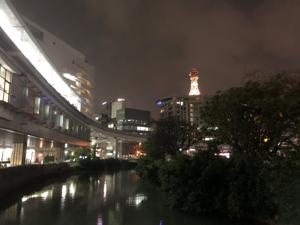
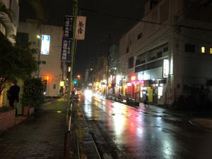

うるがいの話 ある日
最新: 退職後初めての飲み会【うるがいの話 ある日】とは 一日だけのプログです
『うるがいの話』の最新一日だけのプログで、通信料が少なく経済的だ。カニの画像をクリックすると全ての日付が載る『うるがいの話』サイトを表示します
|
|
【うるがいの話】 うるがい(ｳﾙｶﾞｲ urugai)とは、『もずくがに』の名前でとても大きくなります。 |
|---|---|
|
|
【カミマヤーの話】 猫のことを方言でマヤーといいます。カミマヤー（kamimayaa）とは、神の猫のことです。 |
|
【たながぁの音楽】 たながぁ（ﾀﾅｶﾞｰ tanagaa）とは手長えびのことで、何種類かあり大きいのは車 エビぐらいになります。 |

|
【ぶながぁの話】 ぶながぁ(ﾌﾞﾅｶﾞｰ bunagaa)とは、赤い髪の毛、赤い身体、そして身長は１ｍ２０ｃｍ ぐらい、川の蟹を食べているの目撃された。場所は沖縄県国頭郡大宜味村のと ある村僕の隣近所に住んでいる爺さんから、聞いた話です。 |
|
|
【ギーマの話】 ギーマ(giima)とは、山原の里山に咲くスズランに似た、 花を付けます。実は食べられます、 気が付くと口の周りが紫になっています。 |
2023年04月08日 (土）退職後初めての飲み会
15:35
 
夜６時開催の飲み会に向けて、雨のなか５分ほど遅れてきた１６時４５分の市
内バスにオキカカードを使って乗る。なんか、気持ち悪いバス酔いか。商業高
校前のバス亭に待ち合わせをした少し小太りしたオギさんが待っていた。開始
に１５分早く、居酒屋に着く。オカ部長は既に居て、マスクをとり、すぐさま
３名でビールで乾杯。１０年前に会ったきりの御年７５歳になるオカ部長は、
顔に沢山のシミができ老人そのものだった。ただ、目はギラギラして活力は相
変わらずみなぎっていた。いまさら、沖縄でなにをと遠慮くなく問う。６５歳
に脊髄腫瘍（せいずいしゅよう）になり、医者にあと５年と言われたが、７０
歳になってあれ、まだまだやれると感じたらしい。で、まーその他いろいろ説
明が・・・、まずは年金生活者と若い人の７，８名程度の規模で本土の仕事を
受注する事業を実現したとの思いがあり、先月の３月に株式会社を登記し昨日
から、おもろまちに借りたアパートで一人で生活を始めた。フムフム、志は分
かるが、と少し距離を置きながら話を聞く。一次会お開きの８時ごろ、４名目
の院卒で入社したクシさんが来た。６年ぶりに見る髪は、完全な白髪になって
いた。彼ら３名は、その後２次会へ行ったが私は、モノレールに乗り駅から傘
をさしながら、９時半ごろに家に着く。ヨメのお義母さんが、ホームに居るお
かげで参加出来た。オギさんは、去年の３月で６５歳までの再雇用を勤めあげ
いまは、ゲーム三昧の日々を過ごしている（年金受給者）。クシさんは６０歳
の定年を迎え、再雇用で給料が減額されるのに腹がたち、それから５年無職で
金があるのか、既に年金受給の知らせが届いているが手続きを放置していると
さらりと言っていた。オカ部長に当時のシオジ社長はご健在ですかと尋ねると
昨年、亡くなられたと答えた。
１５時２９分 ビットコインの総資産 ￥１０、７９３（↑７６）